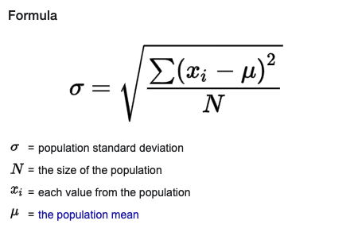

Calculate Standard Deviation Online Tool
About Word Counter Tool
This is a free online tool to do calculation of standard deviation statistics function.
Why Standard Deviation Calculation Is Needed?
Standard deviation is a common way to measure variation or dispersion of data. This is a common tool to do statistical analysis of large data set.
What Standard Deviation Formula is used this tool?
This tool uses mean to calculate the variation.
